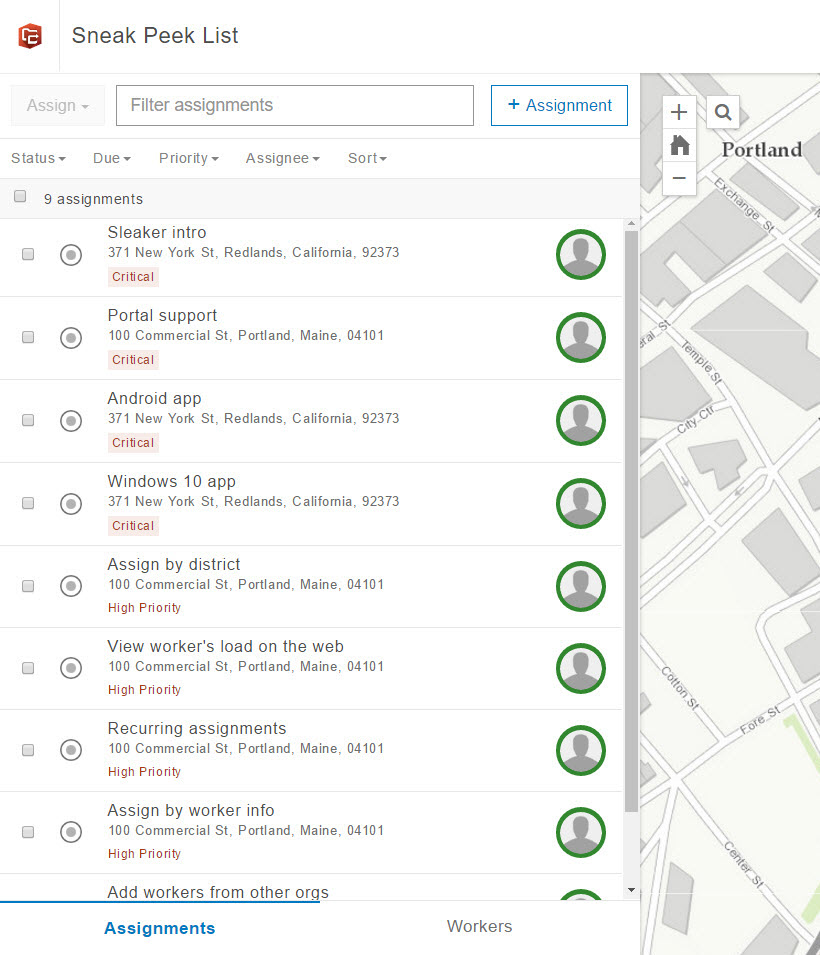

Workforce는 업무 수행과 작업자 상태 및 위치 추적을 비롯한 이동 인력 관리 기능을 제공합니다. 웹을 통한 프로젝트 생성, 관리, 디스패치를 비롯하여 iPhone, iPad, Android 기기에서의 업무 수행과 Collector, Survey123, Navigator와의 통합이 지원됩니다. 하지만 이보다 더 많은 작업을 위한 계획이 있습니다. 다음과 같은 작업을 준비하고 있습니다.
- Windows 10용 모바일 앱
- 프로젝트 구성 환경을 간결하게 유지하면서 더 많은 옵션을 제공
- 작업 자동 할당 기능을 통해 디스패처 효율성 향상
장기 계획 중 일부는 다음과 같습니다.
- ArcGIS Enterprise 10.5 지원
- 오프라인 상태에서의 모바일 앱 사용 지원
- 모바일 앱에서 업무에 사진을 첨부하는 기능
- 모바일 작업자가 업무를 생성하여 자신에게 작업을 할당할 수 있도록 허용
- 순서가 지정된 업무를 모바일 작업자에게 제공할 수 있도록 지원
아이디어를 공유하고 피드백을 보내주세요.
